अध्याय 60: आख़िरी इम्तिहान¶
आख़िरी इम्तिहान — पूरी किताब एक साथ
यहाँ कुछ नया नहीं सिखाया जाएगा। ये test सिर्फ़ ये देखने के लिए है कि किताब का कौन-सा हिस्सा आपके अंदर बैठ गया और कौन-सा दोबारा खोला जाना चाहिए। सवाल जानबूझकर मिला-जुला है — एक सवाल tense का, अगला phrasal verb का, फिर article का। असली ज़िंदगी में भी ऐसा ही होता है: कोई आपको पहले नहीं बताता कि अब grammar का chapter आ रहा है।
कैसे दो
एक ही बैठक में पूरा करो, और जवाब देखने से पहले एक बार ख़ुद सोचो। गलती होना बुरा नहीं है — गलती क्यों हुई, वो "ध्यान दो" वाले हिस्से में लिखा है। Score 80% से ऊपर आए तो किताब आपकी हो गई। 50 से नीचे आए तो कोई बात नहीं, दोबारा शुरू करो — पर इस बार सिर्फ़ उन chapters पर रुको जहाँ गलती हुई।
60.1 Test में क्या-क्या है¶
नीचे की पट्टी दिखाती है कि 30 सवाल किताब के पाँच हिस्सों में कैसे बाँटे गए हैं। अगर आपकी गलतियाँ एक ही रंग में जमा हो रही हैं, तो सीधा उस हिस्से में वापस जाओ — पूरी किताब दोहराने की ज़रूरत नहीं।

छह तरह के सवाल
चुनो (MCQ) · ख़ाली जगह भरो (fill) · गलती ढूँढो (spot) · शब्द जमाओ (reorder) · जोड़ी बनाओ (match) · बोलकर दिखाओ (speak)। "बोलकर दिखाओ" वाले सवाल में mic चाहिए। न हो तो सुनकर दोहरा लो और आगे बढ़ जाओ — score पर असर नहीं पड़ता।
60.2 शुरू करने से पहले — तीन मिनट का warm-up¶
ये तीन गलतियाँ पूरी किताब में सबसे ज़्यादा बार आई हैं। एक बार देख लो, सुधरे हुए वाक्य एक बार बोल लो, फिर test शुरू करो।
तीन चीज़ें, आख़िरी बार
- गलत: I am working here since three years.
- सही: I've been working here for three years.
-
क्यों: Duration के साथ for, point के साथ since। और चलता हुआ काम = have been + -ing।
-
गलत: She is doctor and she is good in surgery.
- सही: She's a doctor and she's good at surgery.
-
क्यों: पेशे के साथ हमेशा a/an, और माहिर होना = good at।
-
गलत: Tell me where is the lift.
- सही: Could you tell me where the lift is?
- क्यों: सवाल जब बड़े वाक्य के अंदर आता है, तो क्रम सीधा हो जाता है — verb पीछे।
60.3 आख़िरी इम्तिहान — पूरी किताब¶
अभ्यास 1
इस वाक्य में 'quickly' कौन-सा part of speech है? — She finished the report quickly.
- Adverb
- Adjective
- Verb
- Preposition
संकेत: ये बताता है कि काम कैसे हुआ।
उत्तर
Adverb
Adverb verb के बारे में बताता है — कैसे, कब, कहाँ। यहाँ 'quickly' बताता है कि 'finished' कैसे हुआ।
अभ्यास 2
Ravi and I finished the work ___ .
संकेत: हम दोनों ने ख़ुद — reflexive रूप।
उत्तर
ourselves
Reflexive pronoun subject से मिलता है: I → myself, we → ourselves। ध्यान रखो: 'ourself' नहीं होता।
अभ्यास 3
कौन-सा वाक्य सही है?
- I have been waiting for twenty minutes.
- I am waiting since twenty minutes.
- I wait since twenty minutes.
- I have waited since twenty minutes.
उत्तर
I have been waiting for twenty minutes.
जो काम पहले शुरू हुआ और अभी चल रहा है = have been + -ing। और duration के साथ 'for', point के साथ 'since'।
अभ्यास 4
गलत शब्द ढूँढो।
She didn't came to the meeting yesterday.
उत्तर
गलत शब्द: came.
सही रूप: She didn't come to the meeting yesterday.
'Did' पहले से past बता देता है, इसलिए verb अपने पहले रूप में आता है — didn't come।
अभ्यास 5
By the time we reached the platform, the train ___ .
- had left
- has left
- left
- was leaving
संकेत: Past में दो काम — कौन पहले हुआ?
उत्तर
had left
Past में दो काम हों, तो जो पहले हुआ उसके साथ 'had' लगता है। इसी को past perfect कहते हैं।
अभ्यास 6
She ___ the answer, so just ask her.
संकेत: सोच वाले verbs continuous में नहीं जाते।
उत्तर
knows
Know, understand, believe, like, want — ये continuous में नहीं जाते। 'She is knowing' गलत है।
अभ्यास 7
कौन-सा वाक्य सही है?
- It took an hour to find a university nearby.
- It took a hour to find an university nearby.
- It took an hour to find an university nearby.
- It took a hour to find a university nearby.
संकेत: a/an आवाज़ से तय होता है।
उत्तर
It took an hour to find a university nearby.
Hour का H चुप है, आवाज़ 'आ' से शुरू — an। University की आवाज़ 'यू' से शुरू होती है, जो consonant जैसी है — a।
अभ्यास 8
एक शब्द बेकार है — उस पर tap करो।
I really enjoy the music in my free time.
उत्तर
गलत शब्द: the.
सही रूप: I really enjoy music in my free time.
आम बात (general) में 'the' नहीं लगता। 'The music' मतलब वो ख़ास music जो अभी बज रहा है।
अभ्यास 9
My sister is very good ___ mathematics.
संकेत: माहिर होना।
उत्तर
at
किसी विषय में माहिर होना = good at। Good with = चीज़ें या लोग संभालने में अच्छा।
अभ्यास 10
एक शब्द हटा देना चाहिए — उसे ढूँढो।
Let us discuss about the new policy on Monday.
उत्तर
गलत शब्द: about.
सही रूप: Let's discuss the new policy on Monday.
Discuss के अंदर ही 'about' शामिल है। इसी family में: enter the room, reach Delhi, order two teas।
अभ्यास 11
The meeting is ___ 4 pm ___ Monday ___ July.
- at / on / in
- in / at / on
- on / in / at
- at / in / on
उत्तर
at / on / in
Exact time = at, दिन/तारीख़ = on, महीना/साल = in। ख़ास से बड़ा — यही तरतीब है।
अभ्यास 12
Each of the three teams ___ its own budget.
संकेत: Each singular है या plural?
उत्तर
has
Each, every, everyone, nobody — सब singular हैं, चाहे बाद में plural दिखे।
अभ्यास 13
सवाल सही क्रम में बनाओ।
शब्द: jacket / Where / you / did / that / buy
उत्तर
Where did you buy that jacket
सवाल में helping verb (did) subject (you) से पहले आता है, और उसके बाद verb अपने पहले रूप में।
अभ्यास 14
क्रम गलत है — गलत जगह वाले शब्द पर tap करो।
Could you tell me where is the lift?
उत्तर
गलत शब्द: is.
सही रूप: Could you tell me where the lift is?
जब सवाल बड़े वाक्य के अंदर आ जाए, तो क्रम सीधा हो जाता है — verb पीछे चला जाता है।
अभ्यास 15
'The report was approved by the committee' का active रूप कौन-सा है?
- The committee approved the report.
- The report approved the committee.
- The committee was approving by the report.
- The report has approved the committee.
उत्तर
The committee approved the report.
Passive से active में जाते वक़्त 'by' वाला हिस्सा subject बन जाता है, और पुराना subject object।
अभ्यास 16
Rekha said that she ___ busy that evening.
संकेत: Reported speech में tense एक क़दम पीछे।
उत्तर
was
किसी की बात आगे बताते वक़्त tense एक क़दम पीछे जाता है: 'I am busy' → she said she was busy।
अभ्यास 17
कौन-सा वाक्य punctuation के हिसाब से सही है?
- It's raining, so take its cover along.
- Its raining, so take it's cover along.
- Its raining, so take its cover along.
- It's raining, so take it's cover along.
उत्तर
It's raining, so take its cover along.
It's = it is। Its = उसका। Apostrophe यहाँ possession नहीं, shortcut बताता है।
अभ्यास 18
'Village' में ज़ोर कहाँ पड़ता है?
- पहले हिस्से पर — VIL-lage
- दूसरे हिस्से पर — vil-LAGE
- दोनों पर बराबर
- कहीं नहीं, सारी आवाज़ बराबर
संकेत: दो हिस्से हैं — VIL-lage।
उत्तर
पहले हिस्से पर — VIL-lage
English के दो-हिस्से वाले ज़्यादातर nouns में ज़ोर पहले हिस्से पर आता है। यही rhythm fluency बनाता है।
अभ्यास 19
बोलते वक़्त सोचने के लिए समय चाहिए। सबसे बेहतर क्या है?
- That's a good question — let me think for a second.
- Basically basically वो ऐसा है कि…
- Actually actually मैं बताता हूँ…
- चुप रहकर बीस सेकंड रुकना
उत्तर
That's a good question — let me think for a second.
Filler शब्द (basically, actually) दोहराने से भरोसा गिरता है। एक पूरा छोटा वाक्य बोलकर समय लेना natural लगता है।
अभ्यास 20
Meeting में किसी की बात समझ नहीं आई। सबसे natural लाइन?
- Sorry, I'm not following.
- I am not understanding.
- I have a doubt in your talk.
- Please repeat it again.
उत्तर
Sorry, I'm not following.
'I'm not following' neutral है — न आप कमज़ोर लगते हो, न सामने वाला गलत। 'Repeat it again' में 'again' बेकार है।
अभ्यास 21
This was lovely, but I should get ___ — it's getting late.
संकेत: निकलने का नरम तरीक़ा।
उत्तर
going
'I should get going' = मुझे अब निकलना चाहिए। 'I need to leave' से ज़्यादा polite और ज़्यादा natural।
अभ्यास 22
'नए form ने लगभग सारी गलतियाँ ख़त्म कर दीं' — कौन-सा verb?
- eliminated
- enhanced
- authorized
- demonstrated
उत्तर
eliminated
Eliminate = पूरी तरह हटा देना। Enhance अच्छे को बेहतर करना है, authorize अधिकार से इजाज़त देना।
अभ्यास 23
एक शब्द बेकार है — उस पर tap करो।
After two night shifts I was very exhausted.
उत्तर
गलत शब्द: very.
सही रूप: After two night shifts I was exhausted.
Exhausted पहले से सबसे तेज़ शब्द है। ज़ोर चाहिए तो 'utterly exhausted' बोलो, 'very' नहीं।
अभ्यास 24
Interview में अपने बारे में कौन-सा advanced शब्द सबसे अच्छा लगता है?
- pragmatic
- enigmatic
- nefarious
- onerous
उत्तर
pragmatic
Pragmatic = व्यावहारिक, नतीजा देखने वाला — तारीफ़ का शब्द है। Enigmatic का मतलब होगा कि आपको कोई समझ नहीं पाता।
अभ्यास 25
Music बहुत तेज़ है। सही वाक्य कौन-सा है?
- Please turn it down.
- Please turn down it.
- Please turn down.
- Please it turn down.
संकेत: Pronoun कहाँ जाता है?
उत्तर
Please turn it down.
Turn down separable है, और pronoun (it) मजबूरी से बीच में आता है। 'Turn down it' कभी सही नहीं होता।
अभ्यास 26
क्रम गलत है — गलत शब्द पर tap करो।
She will look the baby after this evening.
उत्तर
गलत शब्द: after.
सही रूप: She will look after the baby this evening.
Look after inseparable है — object particle के बाद ही आएगा, बीच में कभी नहीं।
अभ्यास 27
Idiom को उसके मतलब से जोड़ो।
| A | B |
|---|---|
| on the same page | आज का काम बंद करना |
| the ball is in their court | उम्मीद कम, पर कोशिश |
| call it a day | एक ही समझ पर होना |
| a long shot | अब फ़ैसला उनका है |
उत्तर
on the same page — एक ही समझ पर होना; the ball is in their court — अब फ़ैसला उनका है; call it a day — आज का काम बंद करना; a long shot — उम्मीद कम, पर कोशिश
ये चारों office में रोज़ सुनाई देते हैं। पहचानना ज़रूरी है, बोलना optional।
अभ्यास 28
Indian English की आदत को उसके international रूप से जोड़ो।
| A | B |
|---|---|
| Myself Ravi | move the call up |
| I have a doubt | graduated in 2019 |
| prepone the call | I'm Ravi |
| passed out in 2019 | I have a question |
उत्तर
Myself Ravi — I'm Ravi; I have a doubt — I have a question; prepone the call — move the call up; passed out in 2019 — graduated in 2019
चारों India में पूरी तरह साफ़ हैं — बस international call के लिए दूसरा gear चाहिए।
अभ्यास 29
Email की एक साफ़ लाइन बनाओ — बिना 'kindly' और 'needful' के।
शब्द: can / we / so / release / invoice / Could / by / the / Friday / approve / you / payment
उत्तर
Could you approve the invoice by Friday so we can release payment
Formula: क्या करना है + किसको + कब तक। तीनों एक लाइन में, और बात बिल्कुल साफ़।
अभ्यास 30
ये लाइन बोलकर दिखाओ। 'I have been' को एक साथ जोड़कर बोलो, और 'at' पर हल्का ज़ोर।
उत्तर
बोलो: I have been working here for three years and I am good at my job
एक लाइन में तीन चीज़ें ठीक हैं — tense, preposition और word order। Interview में यही आपका पहला जवाब बन सकता है।
Score का मतलब
80% से ऊपर — किताब आपकी हो गई। अब practice की जगह किताब नहीं, असली बातचीत है। रोज़ दस मिनट किसी से English में बात करो।
50 से 80 — बुनियाद मज़बूत है, बस कुछ जगह ढीली है। Chart देखो, गलतियों का रंग पहचानो, और सिर्फ़ उन दो-तीन chapters पर वापस जाओ।
50 से नीचे — कोई बात नहीं, और ये बुरा score बिल्कुल नहीं है। इसका मतलब सिर्फ़ ये है कि किताब एक बार और पढ़नी है। दूसरी बार में चीज़ें बहुत जल्दी बैठती हैं, क्योंकि दिमाग़ उन्हें पहचानता है।
60.4 गलती कहाँ हुई? सीधा वहाँ वापस जाओ¶
Score note कर लो, पर उससे ज़्यादा ज़रूरी ये है कि किस तरह के सवाल में गलती हुई। नीचे की table बताती है कि कहाँ वापस जाना है।
| गलती इस क़िस्म की थी | ये chapter दोबारा खोलो |
|---|---|
| a / an / the छूट गया या गलत लगा | a, an, the |
| since / for, had / have, didn't + verb | सारे 12 Tenses |
| in / on / at, good in, afraid from | Preposition · 50 सबसे आम गलतियाँ |
| सवाल का क्रम, "where is the lift" | सवाल पूछना |
| has / have, each, news | Subject-verb agreement |
| Passive से active, reported speech | Active और Passive · किसी की बात आगे बताना |
| it's / its, comma, capital | विराम चिह्न |
| ज़ोर कहाँ पड़ता है, filler words | Rhythm और stress · Fluency |
| Natural phrase गलत या अजीब लगा | Basic से Native |
| बड़ा verb या adjective गलत जगह पर | Verb upgrade · सही adjective चुनो |
| turn down it, look the baby after | Phrasal verbs |
| Idiom का मतलब या जगह गलत | Idioms |
| Myself, revert back, prepone, doubt | Indian English की आदतें |
| can / must / should, have to | can, could, should, must |
| enjoy to read, want going | to do या doing? |
| who / which / that, लंबे वाक्य जोड़ना | छोटे से बड़े वाक्य |
| used to / be used to, I wish, had better | used to, wish, had better |
| get it done, Never have I…, What I need is… | असरदार वाक्य |
| तेज़ English समझ नहीं आई (gonna, wanna) | Native speed English |
| 15 या 50, date, ₹ की रक़म बोलना | Number, date, time, पैसे |
| बात शुरू करना, राय देना, call पर बात | Small talk और राय देना · फ़ोन और video call |
| Presentation की शुरुआत या अंत | Presentation देना |
| happy / unhappy / happiness — गलत रूप | एक शब्द से दस शब्द |
| do a mistake, strong rain जैसी जोड़ी | कौनसा शब्द किसके साथ |
| Doctor, bank, सफ़र या office का शब्द नहीं मिला | रोज़ के विषय · काम और दुनिया |
| affect / effect, lose / loose, borrow / lend | मिलते-जुलते शब्द |
| Spelling की गलती | Spelling के नियम |
| Paragraph, email या application का ढाँचा | वाक्य से Paragraph · ईमेल लिखना · Application और Message |
| CV bullet, essay या report | CV और LinkedIn · Essay और report |
| सुनकर समझना या dictation | छोटी कहानियाँ · रोज़ की कहानियाँ · असली दुनिया की English |
| अपना level और अगला क़दम जानना है | IELTS, TOEFL और आपका level |
आख़िरी बात
English एक इम्तिहान नहीं है — एक आदत है। इस किताब का असली मक़सद ये नहीं था कि आप सब rules याद कर लो। मक़सद ये था कि जब आप English बोलो, तो आपके दिमाग़ में "गलती हो जाएगी" का डर न रहे। वो डर हट गया, तो बाकी सब अपने आप आ जाएगा — थोड़ा-थोड़ा, रोज़। जो बोलता है वो सीखता है। जो गलती से डरता है वो चुप रह जाता है। आप बोलने वाले बनो।